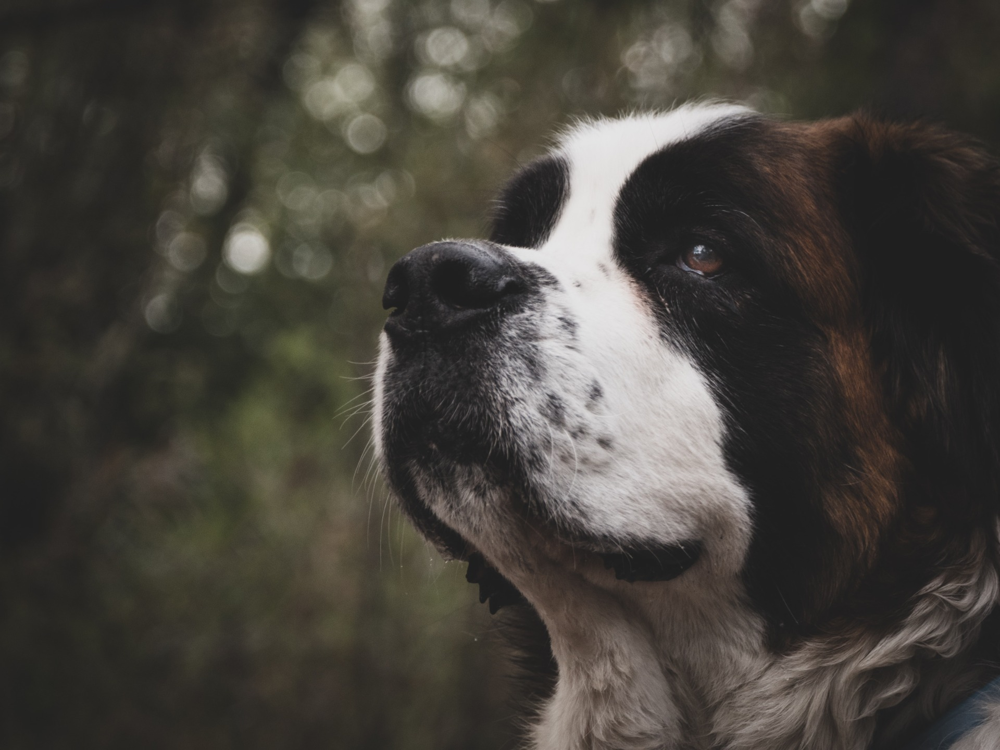
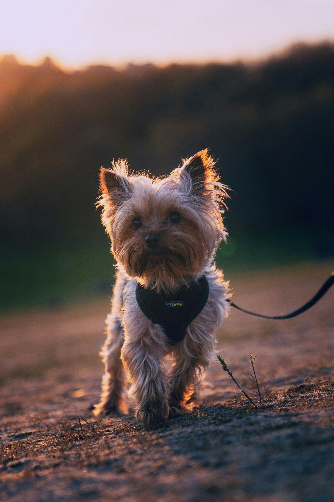
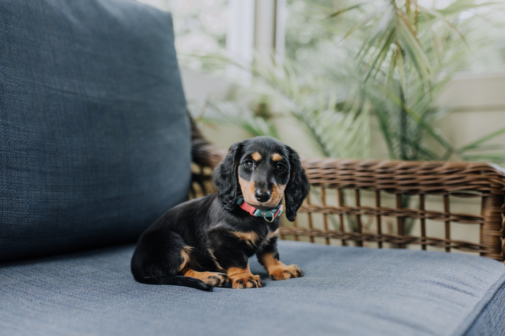
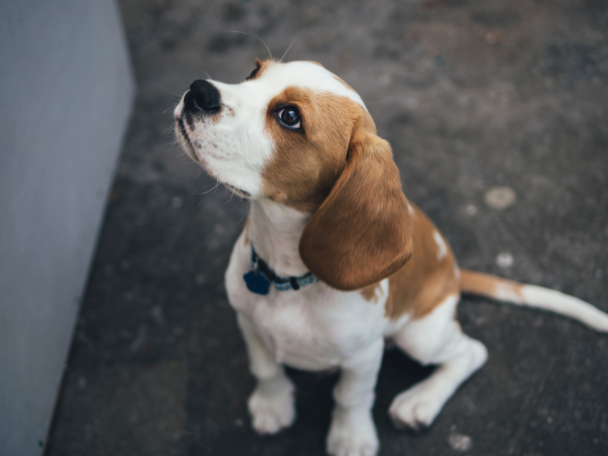
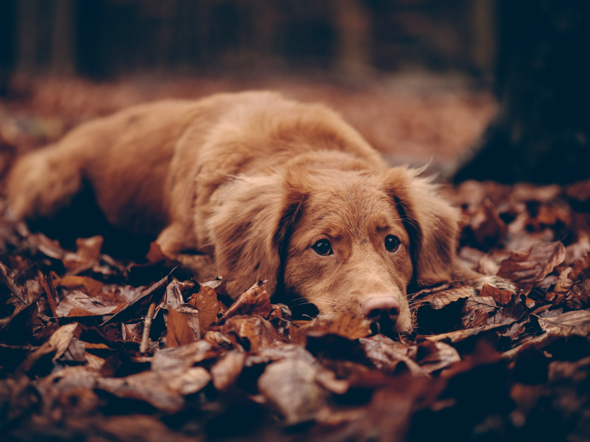
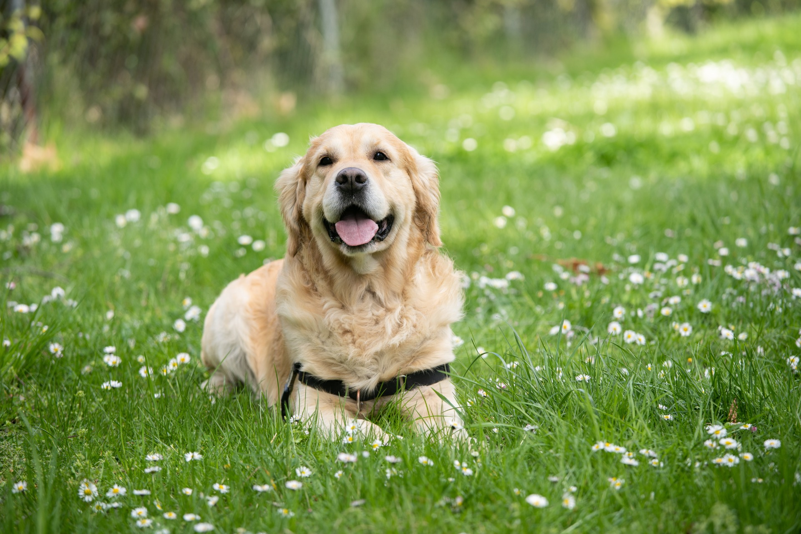
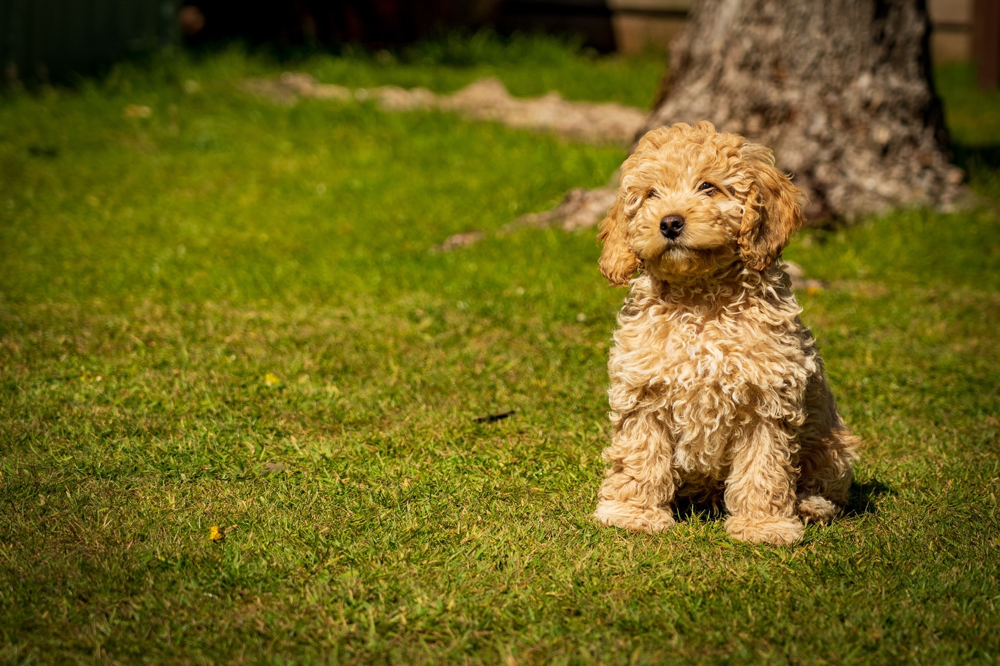
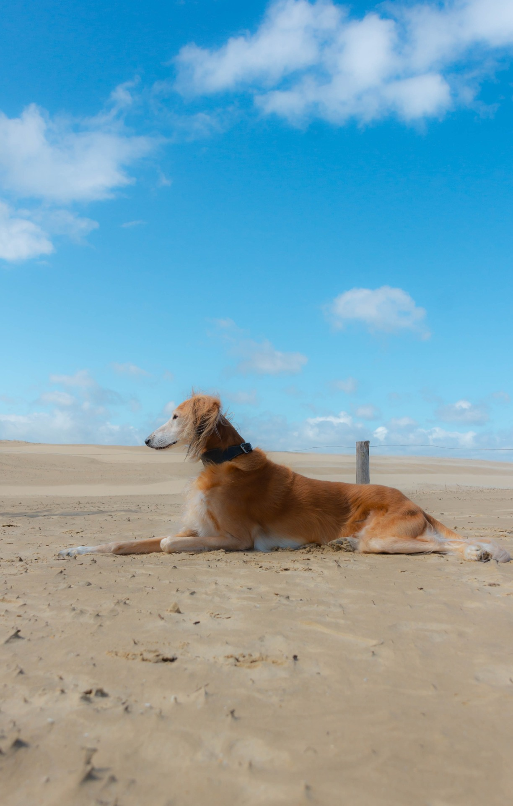

Clasificación general de los perros
Escrito por: Luciana Proaño
Fecha: 31/12/2023
Actualmente, existen más de 300 razas de perro alrededor del mundo. A diferencia de los gatos, los perros de diversas razas presentan diferencias significativas en su comportamiento y características físicas. En este artículo, te mostraremos la variedad de razas de perro basándonos en los grupos definidos por la FCI.

Perros fuertes y ágiles, fácilmente adiestrables. Se especializan en vigilar, guiar y proteger al ganado y también destacan en operaciones de rescate.
Algunos perros representativos incluyen el Pastor Alemán, el Collie, el Boyero Australiano, el Corgi, entre otros.
Foto de Michael Dziedzic en Unsplash
Perros de gran tamaño, ideales para la vigilancia y protección. A este grupo pertenecen los Boxer, Gran Danés, Mastín Inglés, San Bernardo, Doberman, etc.
Foto de JJ Shev en Unsplash
Perros cazadores de cabeza alargada, muy amables, valientes y rectos, aunque algunos son agresivos. Solían perseguir a sus presas hasta las madrigueras. Incluye el Fox Terrier, Yorkshire Terrier, Terrier Inglés, etc.
Foto de Dave Xu en Unsplash
También conocidos como perros salchicha, son perros con cuerpo alargado y patas cortas, muy independientes y valientes.
Foto de Carissa Weiser en Unsplash.
Perros con mucho pelo, que habitan en lugares muy fríos. Tienen una apariencia similar a un lobo, y son muy fuertes y activos. Se utilizan comúnmente para tirar de trineos, labores de protección y pastoreo.
Incluyen el Husky Siberiano, Chow Chow, Akita, Spitz Alemán, Pastor Islandés, etc.
Foto de Moujib Aghrout en Unsplash.
Perros con un sentido del olfato muy fino y desarrollado. Son útiles en la detección de alimentos tóxicos o drogas, y en operaciones de vigilancia y cacería. Los perros parte de este grupo incluyen los Beagles, los Dálmatas, los Basset Hounds, los Rastreadores de Hannover, etc.
Foto de Marcus Wallis en Unsplash.
Perros con un excelente olfato y muy obedientes. Sirven en labores de cacería para buscar, detectar y señalar a la presa. Incluyen el Gordon Setter, Weimaraner, Braco, Spaniel, etc.
Foto de Jamie Street en Unsplash.
Perros con gran habilidad para la caza acuática y la recuperación de presas. Incluyen el Golder Retriever, el Labrador Retriever, Perro de agua español, Sussex spaniel, etc.
Foto de Angel Luciano en Unsplash.
Perros de razas heterogéneas. Tienen una variedad de tamaño y tipo de pelaje, pero comparten la docilidad y apacibilidad. Suelen tener un ladrido muy agudo. Incluyen los Chihuahuas, Shin Tzu, Pug, Bulldog Francés, etc.
Foto de Nick Fewings en Unsplash.
Perros elegantes, de porte regio, delgados y largas extremidades. Son veloces y excelentes cazadores. Aquí se encuentra el Galgo Inglés, el Whippet, el Saluki, entre otros.
Foto de Geike Verniers en Unsplash.
El Blog de Arión (5 de octubre del 2017). El lenguaje corporal del gato. Recuperado el 31 de diciembre del 2023 de: https://blog.arion-petfood.es/el-lenguaje-corporal-del-gato/
Bailey, J. (10 de noviembre del 2022). 5 curiosidades sobre los gatos que no sabías. National Geographic. Recuperado el 31 de diciembre del 2023 de: https://www.nationalgeographicla.com/animales/2022/11/5-curiosidades-sobre-los-gatos-que-no-sabias
Agradecimiento a las Doctoras Alegría Albán, Victoria Guapas, Carolina Joba de la clínica Care for Pets por su aporte para la creación de este blog.
created with
Website Builder Software .